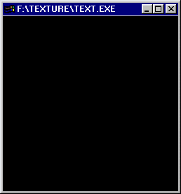

urce source source source source source source source source source source |
[program one] It might look really boring, but how can you program OpenGL without opening a window? We'll take a look at the full program and explain exactly what it does. Print out the source file from the zip and keep it handy, that way you'll be able to tell what's going on properly.

We declare the standard include files for an opengl program - notice how "windows.h" is included before "glut.h"
#include <windows.h>We use a function called "init" to setup OpenGL. All we need to do in this simple program is enable OpenGL's depth test facility on line 3. We set the background colour to black on line 4.
[1] void init ( void )The function
"display" is called every time the OpenGL window needs redrawing.
Line 3 clears both the colour buffer (the part you can actually see) and the
depth buffer (information opengl uses to calculate which polygons are in front
of which). You place all of your drawing code inbetween the glPushMatrix
and glPopMatrix calls, lines 4 and 5.
A call to glutSwapBuffers on line 6
finalises the scene.
[1] void display ( void )
[2] {
[3] glClear ( GL_COLOR_BUFFER_BIT | GL_DEPTH_BUFFER_BIT );
[4] glPushMatrix ( );
[5] glPopMatrix ( );
[6] glutSwapBuffers ( );
[7] }
"reshape"
is called everytime the opengl window is resized, its also called when the
application is first loaded. Line 3 maps the opengl viewport onto the
correct window coordinates.
Line 4 switches opengl from
GL_MODELVIEW
mode to
GL_PROJECTION. Every transformation that occurs from now on, will affect
the way the objects are projected from 3d to 2d onto the screen - not
affect the objects themselves.
[1] void reshape(int w, int h)
[2] {
[3] glViewport
( 0, 0, w, h );
[4] glMatrixMode ( GL_PROJECTION );
[5] glLoadIdentity ( );
Lines 6 through 9 call gluPerspective and check whether the height of the window is zero (if it is, we need to stop our program from dividing by zero). Toward the end of the function we switch back to GL_MODELVIEW mode.
[6] if ( h==0 )
[7] gluPerspective ( 80, ( float ) w, 1.0, 5000.0 );
[8] else
[9] gluPerspective ( 80, ( float ) w / ( float ) h, 1.0, 5000.0 );
[10] glMatrixMode ( GL_MODELVIEW );
[11] glLoadIdentity ( );
[12] }
Every time glut detects a keypress, the function "keyboard" is called. A switch statement monitors which key was pressed and takes the appropriate action. Line 10 puts glut into fullscreen mode whereas line 13 places it back in a window. glut fullscreen support can be flickery on some 3d cards.
[1] void keyboard ( unsigned char key, int x,
int y )
[2] {
[3] switch ( key )
[4] {
[5] case 27: /* Escape key */
[7]
exit ( 0 );
[8]
break;
[9] case 'f':
[10]
glutFullScreen ( );
[11]
break;
[12] case 'w':
[13]
glutReshapeWindow ( 250,250 );
[14]
break;
[15] default:
[16] break;
[17] }
[18] }
The 'main loop' is where we set the functions we've defined above as glut callback functions. Once the glutMainLoop begins, it will look for the function names we've supplied and execute them. Lines 3 to 7 set up the OpenGL context, including any special initialisation we need in our "init" function. Lines 8 to 10 set the callbacks for glut. Line 11 initiates the glut message loop.
[1] int main ( int argc, char** argv )
[2] {
[3] glutInit ( &argc, argv );
[4] glutInitDisplayMode ( GLUT_RGB | GLUT_DOUBLE );
[5] glutInitWindowSize ( 250, 250 );
[6] glutCreateWindow ( argv[0]
);
[7] init ( );
[8] glutReshapeFunc (
reshape );
[9] glutKeyboardFunc ( keyboard );
[10] glutDisplayFunc ( display );
[11] glutMainLoop ( );
[12]
[13] return 0;
[14] }
Website and
content, Paul Groves